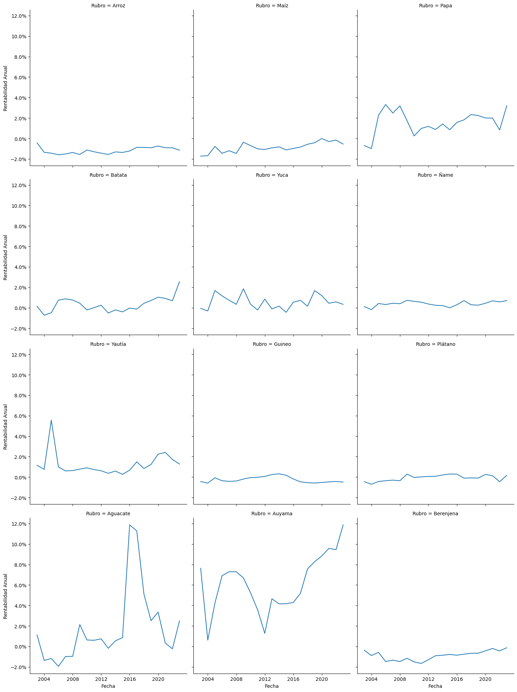
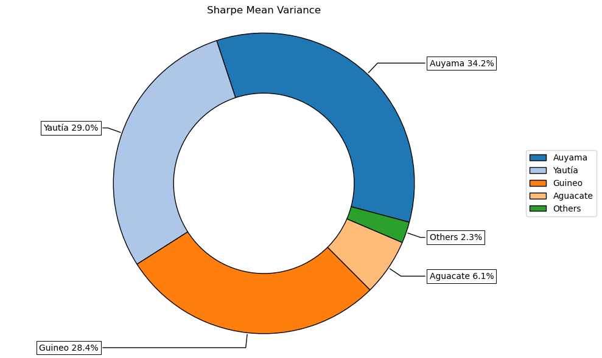
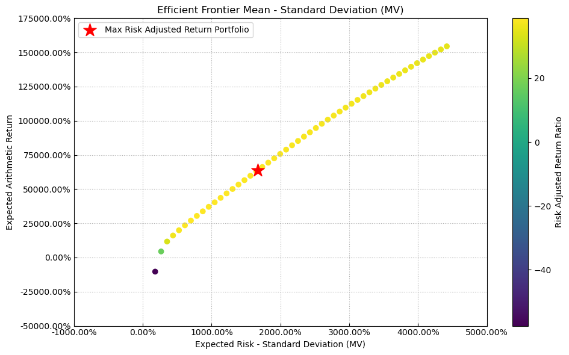
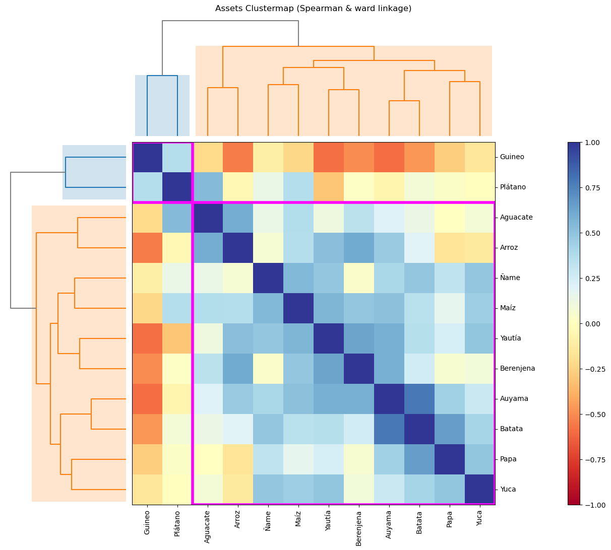
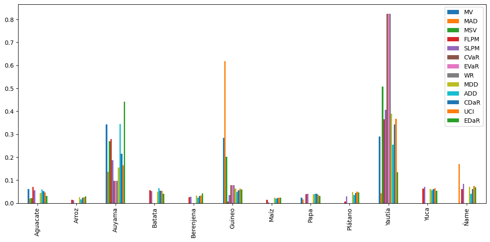

import seaborn as sns
import matplotlib.pyplot as plt
from matplotlib.ticker import PercentFormatter
import riskfolio as rp
import pandas as pd
from pathlib import PathIn [14]:
In [15]:
df = pd.read_excel(Path().cwd().parent / "data" / "dataset.xlsx", sheet_name="data_anual")
df['Fecha'] = pd.to_datetime(df['Fecha'])
df = df[
(df["Fecha"] >= "2002-01-01")
]
# Crear el gráfico
g = sns.relplot(
data=df,
x="Fecha",
y="Rentabilidad Anual",
col="Rubro",
kind="line",
col_wrap=3,
)
# Aplicar el formateador de porcentaje a cada subgráfico
for ax in g.axes.flat:
ax.yaxis.set_major_formatter(PercentFormatter())
# Ajustar el diseño
plt.tight_layout()
In [16]:
Y = df.pivot_table(index="Fecha", columns="Rubro", values='Rentabilidad Anual')
display(Y.head())| Rubro | Aguacate | Arroz | Auyama | Batata | Berenjena | Guineo | Maíz | Papa | Plátano | Yautía | Yuca | Ñame |
|---|---|---|---|---|---|---|---|---|---|---|---|---|
| Fecha | ||||||||||||
| 2002-12-31 | 1.122560 | -0.429984 | 7.632047 | 0.139388 | -0.375964 | -0.427006 | -1.725044 | -0.693487 | -0.445354 | 1.150770 | -0.061118 | 0.111642 |
| 2003-12-31 | -1.365027 | -1.345558 | 0.608851 | -0.721773 | -0.888504 | -0.593890 | -1.677293 | -0.989070 | -0.696857 | 0.759502 | -0.307660 | -0.175527 |
| 2004-12-31 | -1.183266 | -1.437202 | 4.230284 | -0.485586 | -0.580631 | -0.061911 | -0.775918 | 2.274037 | -0.428878 | 5.562082 | 1.683380 | 0.420837 |
| 2005-12-31 | -1.951215 | -1.588247 | 6.896406 | 0.746568 | -1.478060 | -0.357606 | -1.446040 | 3.319520 | -0.355487 | 0.987759 | 1.167513 | 0.316920 |
| 2006-12-31 | -0.983526 | -1.515451 | 7.294891 | 0.871023 | -1.339335 | -0.416368 | -1.197273 | 2.482070 | -0.297831 | 0.601442 | 0.733008 | 0.443948 |
In [26]:
# Building the portfolio object
port = rp.Portfolio(returns=Y)
# Calculating optimal portfolio
# Select method and estimate input parameters:
method_mu = "hist" # Method to estimate expected returns based on historical data.
method_cov = "hist" # Method to estimate covariance matrix based on historical data.
port.assets_stats(method_mu=method_mu, method_cov=method_cov)
# Estimate optimal portfolio:
model = "Classic" # Could be Classic (historical), BL (Black Litterman) or FM (Factor Model)
rm = "MV" # Risk measure used, this time will be variance
obj = "Sharpe" # Objective function, could be MinRisk, MaxRet, Utility or Sharpe
hist = True # Use historical scenarios for risk measures that depend on scenarios
rf = 0.08 # Risk free rate
l = 0 # Risk aversion factor, only useful when obj is 'Utility'
w = port.optimization(model=model, rm=rm, obj=obj, rf=rf, l=l, hist=hist)
display(w.T.style.format('{:.2f}%'))| Aguacate | Arroz | Auyama | Batata | Berenjena | Guineo | Maíz | Papa | Plátano | Yautía | Yuca | Ñame | |
|---|---|---|---|---|---|---|---|---|---|---|---|---|
| weights | 0.06% | 0.00% | 0.34% | 0.00% | 0.00% | 0.28% | 0.00% | 0.02% | 0.00% | 0.29% | 0.00% | 0.00% |
In [18]:
ax = rp.plot_pie(
w=w,
title="Sharpe Mean Variance",
others=0.05,
nrow=25,
cmap="tab20",
height=6,
width=10,
ax=None,
)
In [19]:
points = 50 # Number of points of the frontier
frontier = port.efficient_frontier(model=model, rm=rm, points=points, rf=rf, hist=hist)
display(frontier.T.head())| Aguacate | Arroz | Auyama | Batata | Berenjena | Guineo | Maíz | Papa | Plátano | Yautía | Yuca | Ñame | |
|---|---|---|---|---|---|---|---|---|---|---|---|---|
| 0 | 1.131972e-12 | 3.351843e-01 | 1.199798e-12 | 4.243539e-02 | 1.660929e-10 | 0.450169 | 7.940005e-12 | 1.129033e-02 | 1.979427e-11 | 9.966547e-12 | 4.990606e-02 | 0.111015 |
| 1 | 2.432629e-03 | 3.712861e-02 | 1.969803e-02 | 5.697471e-10 | 1.195241e-02 | 0.424708 | 4.235885e-11 | 1.465488e-10 | 4.858050e-10 | 1.559373e-02 | 2.080951e-02 | 0.467677 |
| 2 | 9.690727e-03 | 3.743937e-10 | 5.249471e-02 | 6.038558e-10 | 3.762292e-10 | 0.438761 | 1.882778e-10 | 2.038835e-09 | 1.982921e-09 | 4.948958e-02 | 4.918369e-08 | 0.449564 |
| 3 | 1.429170e-02 | 2.531953e-10 | 7.811385e-02 | 4.528133e-10 | 2.561862e-10 | 0.432403 | 1.707909e-10 | 3.954323e-09 | 1.758327e-09 | 7.067926e-02 | 8.967649e-09 | 0.404512 |
| 4 | 1.829923e-02 | 1.500566e-10 | 1.004295e-01 | 2.808664e-10 | 1.523501e-10 | 0.426863 | 1.145927e-10 | 4.767372e-09 | 1.171044e-09 | 8.913639e-02 | 4.444402e-09 | 0.365272 |
In [20]:
label = "Max Risk Adjusted Return Portfolio" # Title of point
mu = port.mu # Expected returns
cov = port.cov # Covariance matrix
returns = port.returns # Returns of the assets
ax = rp.plot_frontier(
w_frontier=frontier,
mu=mu,
cov=cov,
returns=returns,
rm=rm,
rf=rf,
alpha=0.05,
w=w,
label=label,
)
In [21]:
ax = rp.plot_frontier_area(
w_frontier=frontier, cmap="tab20", height=6, width=10, ax=None
)
In [22]:
rp.plot_hist(returns=Y, w=w, alpha=0.05, bins=50, height=6, width=10, ax=None)
In [23]:
rp.plot_clusters(
returns=Y,
codependence="spearman",
linkage="ward",
k=None,
max_k=10,
leaf_order=True,
dendrogram=True,
ax=None,
)/home/ian/miniforge3/envs/intec/lib/python3.12/site-packages/riskfolio/src/PlotFunctions.py:2996: UserWarning: This figure includes Axes that are not compatible with tight_layout, so results might be incorrect.
fig.tight_layout()
In [24]:
# Risk Measures available:
#
# 'MV': Standard Deviation.
# 'MAD': Mean Absolute Deviation.
# 'MSV': Semi Standard Deviation.
# 'FLPM': First Lower Partial Moment (Omega Ratio).
# 'SLPM': Second Lower Partial Moment (Sortino Ratio).
# 'CVaR': Conditional Value at Risk.
# 'EVaR': Entropic Value at Risk.
# 'WR': Worst Realization (Minimax)
# 'MDD': Maximum Drawdown of uncompounded cumulative returns (Calmar Ratio).
# 'ADD': Average Drawdown of uncompounded cumulative returns.
# 'CDaR': Conditional Drawdown at Risk of uncompounded cumulative returns.
# 'EDaR': Entropic Drawdown at Risk of uncompounded cumulative returns.
# 'UCI': Ulcer Index of uncompounded cumulative returns.
rms = [
"MV",
"MAD",
"MSV",
"FLPM",
"SLPM",
"CVaR",
"EVaR",
"WR",
"MDD",
"ADD",
"CDaR",
"UCI",
"EDaR",
]
w_s = pd.DataFrame([])
for i in rms:
w = port.optimization(model=model, rm=i, obj=obj, rf=rf, l=l, hist=hist)
w_s = pd.concat([w_s, w], axis=1)
w_s.columns = rms
w_s.style.format("{:.2%}").background_gradient(cmap="YlGn")| MV | MAD | MSV | FLPM | SLPM | CVaR | EVaR | WR | MDD | ADD | CDaR | UCI | EDaR | |
|---|---|---|---|---|---|---|---|---|---|---|---|---|---|
| Aguacate | 6.10% | 2.01% | 2.14% | 7.04% | 5.57% | 0.00% | 0.00% | 0.00% | 4.34% | 5.93% | 5.22% | 4.58% | 3.18% |
| Arroz | 0.00% | 0.00% | 0.00% | 1.46% | 1.24% | 0.00% | 0.00% | 0.00% | 2.54% | 1.64% | 2.31% | 2.60% | 2.99% |
| Auyama | 34.25% | 13.56% | 26.92% | 27.86% | 18.70% | 9.64% | 9.64% | 9.64% | 15.49% | 34.39% | 21.47% | 16.32% | 44.09% |
| Batata | 0.00% | 0.00% | 0.00% | 5.54% | 5.13% | 0.00% | 0.00% | 0.00% | 5.00% | 6.49% | 5.42% | 5.26% | 4.10% |
| Berenjena | 0.00% | 0.00% | 0.00% | 2.54% | 2.76% | 0.00% | 0.00% | 0.00% | 3.28% | 2.38% | 3.08% | 3.30% | 4.16% |
| Guineo | 28.41% | 61.78% | 20.22% | 0.61% | 3.42% | 7.86% | 7.86% | 7.86% | 6.34% | 4.79% | 5.62% | 6.27% | 5.94% |
| Maíz | 0.00% | 0.00% | 0.00% | 1.44% | 0.34% | 0.00% | 0.00% | 0.00% | 2.31% | 1.92% | 2.23% | 2.34% | 2.33% |
| Papa | 2.27% | 1.52% | 0.00% | 3.94% | 4.00% | 0.00% | 0.00% | 0.00% | 3.79% | 3.96% | 3.98% | 3.71% | 3.15% |
| Plátano | 0.00% | 0.00% | 0.00% | 0.73% | 2.89% | 0.00% | 0.00% | 0.00% | 4.88% | 3.56% | 4.35% | 5.06% | 4.55% |
| Yautía | 28.96% | 4.19% | 50.72% | 36.51% | 40.64% | 82.49% | 82.49% | 82.49% | 38.87% | 25.46% | 34.24% | 36.67% | 13.33% |
| Yuca | 0.00% | 0.00% | 0.00% | 6.23% | 7.00% | 0.00% | 0.00% | 0.00% | 6.13% | 5.47% | 6.05% | 6.55% | 5.38% |
| Ñame | 0.00% | 16.94% | 0.00% | 6.10% | 8.32% | 0.00% | 0.00% | 0.00% | 7.03% | 4.02% | 6.04% | 7.32% | 6.81% |
Pesos óptimos de la cartera según la métrica de riesgo
In [25]:
# Plotting a comparison of assets weights for each portfolio
fig = plt.gcf()
fig.set_figwidth(14)
fig.set_figheight(6)
ax = fig.subplots(nrows=1, ncols=1)
w_s.plot.bar(ax=ax)